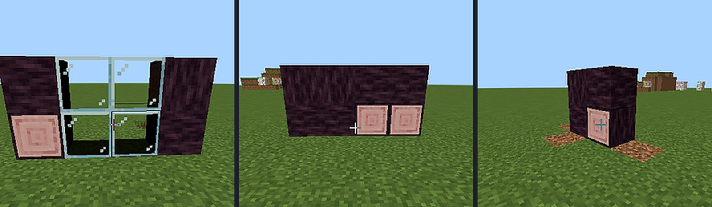

Decoy Spy Glass
A window that only works one way: solid from the corridor, transparent from the room behind it.
gg:super_glass⧉
One block thick, and the side faces follow a mode you switch directly in your hand. The same glass can be mounted on a wall, the floor or the ceiling; the sector you are looking through becomes the clear one.
▸ LIVE
The two modes
| Mode | How to select | Glass faces | Disguised faces | Best for |
|---|---|---|---|---|
| Standard | Just hold it | 1 front | 5 (back + 4 sides) | Corridor edges are visible |
| Wide angle | Hold Sneak | 5 front + 4 sides | 1 back only | Sides buried inside a wall |

Mounting
- Wall, floor and ceiling mounts are all supported.
- The clear sector always faces the player who placed it.
- The outside face is always solid — by design, not a bug.
Corridor trick
Line a whole corridor with Standard-mode spy glass: visitors see a solid wall, you see everything. The recipe yields 4 per craft, so it is cheap.
Recipe: 02 · Decoy Spy Glass — glass, iron and one Decoy Block.
Mounting in wall, floor, or ceiling
1
Pick the mode in hand
Hold normally for Standard; hold Sneak for Wide angle.
2
Place against the frame
The sector you look through becomes the clear one; the remaining faces stay disguised.
3
Check from both sides
From the corridor the block looks solid; from inside it is clear glass.
Corridor observation line
Line a whole corridor with Standard-mode spy glass. Visitors see a solid wall; you see everything from inside. The recipe yields 4 per craft, so a long observation line is cheap. Keep the back face buried in the wall so only the intended front sector is clear.
One-way by design
Outside face is always solid
Spy glass is one-directional. The outside face is always solid by design; it is not a two-way window.